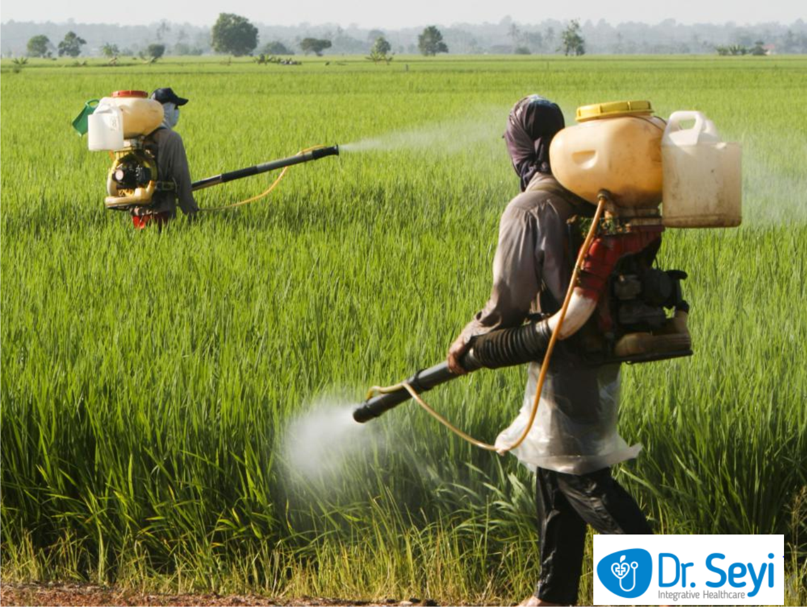

 We provide access to loans to farmers who meet the following credentials:
Click here to go back to my homepage
Click here to go back to about us
At AfriTech Agribusiness we care about our farmers farm ouput and quality. We create opportunities to young farmers who lack the fundings to buy fertilisers, seeds and machinery and real time loans.